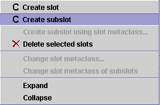
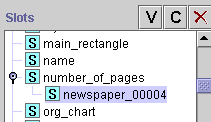

Creating a Subslot
Creating a Subslot

Normally, whenever you create a new slot, it is a top-level slot. However,
you can also create a subslot of an existing slot. You might do this, for
example, when you want two slots which share information, but where one slot
(the subslot) is more restrictive.
To create a subslot of a slot:
- In the Slot Tab, select the slot that you want as the parent of your
subslot.
- Click the right mouse button.
- Select Create subslot from the slot menu.

- The new slot is created as a subslot of the selected slot. Except for the
name, when created, it has the same properties as its parent slot.

- You can use the Slot Form to edit the properties of the new slot.
Next: Understanding Metaslots
Slots Table of Contents